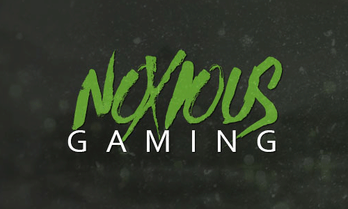
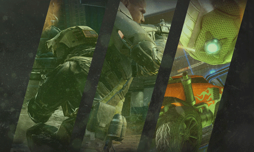

Find Me On:


Find Me On:
First off I picked a brushed font because I felt it suit the more grungy, unprofessional, sloppy sort of style I was trying to go for with this design. I then added a simple layer style to it and bam, sexy.
On the right hand side I filled in the area with three rotated rectangles that would carry a screenshot from some of the most popular games at the moment. I then overlayed green to make it look nice and suit the theme.
In the end I filled the area with a variety of grunge textures, light textures and other screens and resources to try and fill the area, add a feeling of depth and set the grungy scene I was going for.
Return Home